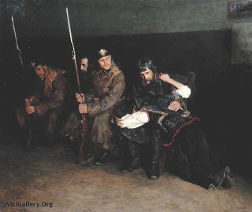

Sanhedrin 29 - Courtroom Proceedings and Hearsay
They bring the witnesses into the courtroom and intimidate them against testifying falsely, telling them that perjurious witnesses are contemptible even in the eyes of those who hire them. Then they send out everyone but the most prominent witness and the litigants and ask, "Tell us how do you know that this one owes money to that one."
If he says, "He told me, 'I owe him'," or if he says, "So-and-so told me that he owes him," - it is as if he said nothing. Only direct observations are admissible, such as a loan taking place, whereas his statements constitute hearsay. However, if he says that the defendant appointed them as witnesses, then admitted his debt to the plaintiff, it is acceptable. Then they bring in the second witness. The testimonies should correspond.
The ruling of the majority of judges is accepted, but if one says "I don't know," they add judges, two at a time. After the verdict is announced, the judges are not allowed to reveal individual opinions, because of " Do not be a gossipmonger ..."
Art: Nikolaj Alekseevich Kasatkin - "In the Corridor of the District Court"